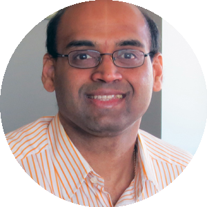

3rd workshop on Vision-based InduStrial InspectiON (VISION)
location TBD @ ICCV 2025, Honolulu, Hawaii
9:00 - 17:00 HAST (UTC−10:00), October 19th
location TBD @ ICCV 2025, Honolulu, Hawaii
9:00 - 17:00 HAST (UTC−10:00), October 19th
The VISION workshop will provide a platform for the exchange of scholarly innovations and emerging practical challenges in Vision-based Industrial Inspection. Through a series of keynote talks, technical presentations, and challenge competitions, this workshop aims to (i) bring together researchers from the interdisciplinary research communities related to computer vision-based inspection; and (ii) connect researchers and industry practitioners to synergize recent research progress and current needs in industrial practice.
Topics TBD. More keynote speakers will be announced soon — stay tuned!

Dr. Satish Bukkapatnam
Regents Professor, Texas A&M, Texas A&M (TEES)
"TBD"
Dr. Fugee Tsung
Chair Professor, HKUST, HKUST(GZ)
“Empowering quality control and inspection with industrial informatics and intelligence”
Dr. C Thomas
Applied Research Manager (Machine Learning), Apple
"TBD"
Dr. Zhiyong Xiao
Computer Vision AI/ML Engineer, Medtronic
"Transforming Medical Device Manufacturing with Image Analytics"
Roboflow
Computer vision tools for developers and enterprises
"TBD"
Dr. Yao Yuan
Professor of Mathematics, HKUST
"TBD"
From an industry point of view:
From an academic point of view:
Research and industrial papers relevant to the topics are invited. Authors have two options:
Regular paper (aim to publication in the conference workshop proceedings) submission deadline (AoE):
| Date | Event |
|---|---|
| July 3rd extended, 2025 | Paper submission deadline 📣 |
| July 10, 2025 | Author notification (rolling) |
Extended abstract (NOT published in workshop proceedings) submission deadline (AoE):
| Date | Event |
|---|---|
| July 19, 2025 | Paper submission deadline 📣 |
| August 13, 2025 | Author notification |
Dr. Shancong Mou
University of Minnesota, Twin Cities
Dr. Hao Yan
Arizona State University

Dr. Zirui Liu
University of Minnesota, Twin Cities
Dr. Juan Du
Hong Kong University of Science and Technology, China
Gokberk Cinbis
Middle East Technical University, Turkey

Wan Wang
University of Minnesota, Twin Cities